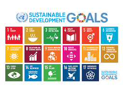
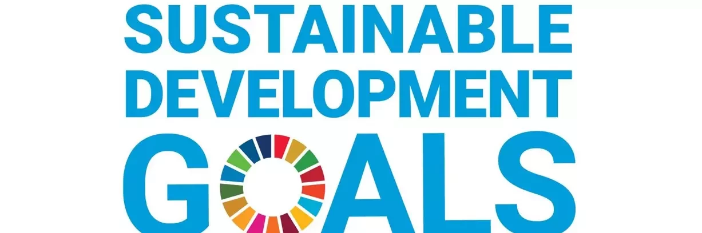
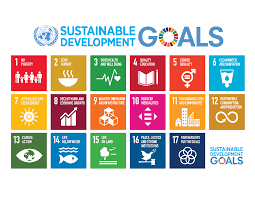
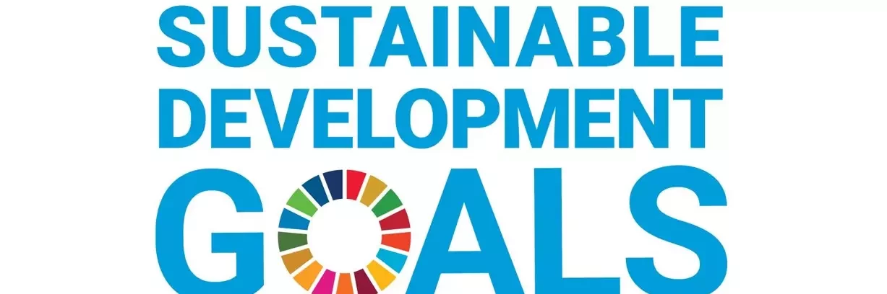

SDGs (Sustainable Development Goals) adalah serangkaian tujuan global yang disepakati oleh semua negara anggota PBB untuk dicapai pada tahun 2030. Tujuan ini bertujuan untuk mengatasi berbagai masalah global, seperti kemiskinan, ketidaksetaraan, kesehatan, pendidikan, perubahan iklim, dan banyak lagi. Salah satu SDGs yang sangat penting adalah Tujuan 4: Pendidikan Berkualitas (Quality Education). Kerja sama internasional, baik itu bilateral, regional, atau multilateral, memainkan peran kunci dalam membantu negara-negara mencapai tujuan-tujuan SDGs, termasuk Tujuan 4.
Penguatan Kapasitas Melalui Forum Multilateral: Di forum multilateral seperti PBB, OKI, G77, atau ASEAN, negara-negara bekerja sama untuk merumuskan kebijakan yang mendukung pencapaian SDGs secara global. Melalui kerjasama tersebut, negara-negara dapat mengatasi masalah yang lebih besar yang menghambat pencapaian tujuan global, seperti ketidaksetaraan dalam akses pendidikan atau kekurangan fasilitas pendidikan di daerah pedesaan atau kawasan konflik. Penanganan Isu Global Secara Kolektif: Beberapa tantangan yang dihadapi dalam mencapai SDG 4, seperti perubahan iklim, krisis pengungsi, atau ketidaksetaraan gender dalam pendidikan, memerlukan kerja sama internasional untuk menemukan solusi yang efektif. Sebagai contoh, melalui kerja sama multilateral dalam Konvensi Kerangka Kerja PBB tentang Perubahan Iklim (UNFCCC), negara-negara dapat bekerja sama untuk mendanai proyek-proyek yang memungkinkan pendidikan berkelanjutan meskipun terjadi bencana alam
Pembagian Sumber Daya dan Pengetahuan: Negara-negara yang lebih maju dapat membantu negara-negara berkembang dengan berbagi sumber daya, teknologi, dan pengetahuan. Misalnya, dalam hal pendidikan berkualitas, negara-negara maju dapat memberikan dukungan melalui beasiswa, transfer teknologi pendidikan, atau pengembangan infrastruktur pendidikan di negara berkembang. Ini memungkinkan negara-negara berkembang untuk memperbaiki kualitas pendidikan dan memenuhi indikator SDG 4.
b) Kerja Sama Meningkatkan Akses dan Kualitas Pendidikan: Pencapaian Tujuan 4 sangat bergantung pada kerja sama global, terutama untuk memastikan bahwa semua orang, tanpa terkecuali, bisa mengakses pendidikan yang berkualitas. Negara-negara harus bekerja sama dalam menyusun dan mendanai proyek-proyek pendidikan yang lebih inklusif, seperti program pendidikan bagi anak-anak pengungsi, perempuan di negara-negara berkembang, atau penyandang disabilitas. Oleh karena itu, pencapaian SDGs sangat tergantung pada sinergi antara negara-negara melalui kerja sama bilateral, regional, dan multilateral. 2) Mekanisme yang Menghubungkan SDGs dan Kerja Sama Ada beberapa mekanisme utama yang menghubungkan SDGs dengan kerja sama internasional, di antaranya: a) Kerja Sama Multilateral Melalui Organisasi Internasional: Organisasi internasional seperti Perserikatan Bangsa-Bangsa (PBB) dan badan-badan khususnya (misalnya UNESCO untuk pendidikan) berfungsi sebagai platform di mana negara-negara dapat berkolaborasi untuk mencapai SDGs. Forum PBB memungkinkan negara-negara untuk berbagi pengalaman dan terbaik praktik dalam pencapaian SDGs. Forum global seperti UNFCCC atau World Health Organization (WHO) dapat mendiskusikan dan merumuskan kebijakan bersama untuk mengatasi tantangan global yang memengaruhi pencapaian SDGs, seperti perubahan iklim yang mempengaruhi pendidikan di daerah rawan bencana.
2) Mekanisme yang Menghubungkan SDGs dan Kerja Sama Ada beberapa mekanisme utama yang menghubungkan SDGs dengan kerja sama internasional, di antaranya: a) Kerja Sama Multilateral Melalui Organisasi Internasional: Organisasi internasional seperti Perserikatan Bangsa-Bangsa (PBB) dan badan-badan khususnya (misalnya UNESCO untuk pendidikan) berfungsi sebagai platform di mana negara-negara dapat berkolaborasi untuk mencapai SDGs. Forum PBB memungkinkan negara-negara untuk berbagi pengalaman dan terbaik praktik dalam pencapaian SDGs. Forum global seperti UNFCCC atau World Health Organization (WHO) dapat mendiskusikan dan merumuskan kebijakan bersama untuk mengatasi tantangan global yang memengaruhi pencapaian SDGs, seperti perubahan iklim yang mempengaruhi pendidikan di daerah rawan bencana. b) Pendanaan dan Pembiayaan untuk SDGs: Mekanisme pendanaan juga sangat penting untuk mencapainya. Kerja sama bilateral dan multilateral dalam bentuk bantuan luar negeri (ODA), investasi, dan pembiayaan Pembagian Sumber Daya dan Pengetahuan: Negara-negara yang lebih maju dapat membantu negara-negara berkembang dengan berbagi sumber daya, teknologi, dan pengetahuan. Misalnya, dalam hal pendidikan berkualitas, negara-negara maju dapat memberikan dukungan melalui beasiswa, transfer teknologi pendidikan, atau pengembangan infrastruktur pendidikan di negara berkembang. Ini memungkinkan negara-negara berkembang untuk memperbaiki kualitas pendidikan dan memenuhi indikator SDG 4.
c) Forum Kerja Sama Regional dan Negara Berkembang: Melalui kerja sama regional (misalnya, ASEAN, Uni Afrika, Mercosur), negara-negara dapat mendiskusikan cara-cara untuk meningkatkan kualitas pendidikan di kawasan mereka. Misalnya, Indonesia dapat bekerja sama dengan negara-negara ASEAN untuk memperkenalkan kurikulum yang lebih inklusif dan teknologi pendidikan yang dapat membantu pencapaian Tujuan 4. d) Kebijakan dan Reformasi Pendidikan Global: Banyak negara juga melakukan kerja sama pendidikan bilateral dalam hal pengembangan kebijakan atau kurikulum. Sebagai contoh, Indonesia memiliki program kerjasama pendidikan dengan banyak negara, yang bertujuan untuk berbagi teknologi pendidikan atau meningkatkan kualitas pendidikan tinggi dan kejuruan. Penguatan kapasitas pendidikan di negara-negara berkembang juga merupakan bagian dari upaya kerja sama internasional untuk mencapai SDGs secara keseluruhan. e) Pengumpulan Data dan Pemantauan Pencapaian SDGs: Mekanisme pengumpulan data yang terkoordinasi antar negara juga penting untuk memantau pencapaian SDGs. Negara-negara bekerja sama untuk melaporkan kemajuan mereka dalam pencapaian SDGs kepada PBB, dan ini sering melibatkan pertukaran informasi, pemantauan bersama, dan penggunaan teknologi untuk memverifikasi data. Dengan adanya data yang akurat, negara-negara dapat bekerja lebih efisien dalam merencanakan dan mengimplementasikan kebijakan pendidikan.